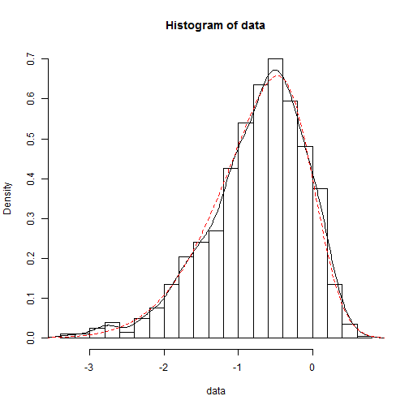

Given a random variable \(X\), which has the probability denisity function
\[
\begin{equation}
f(x) = 2 \phi(x)\ \Phi(\alpha x)
\end{equation}
\]
where \(\alpha\) is a number and
\[
\begin{equation}
\phi(x)= \exp(-x^2/2)/\sqrt{2\pi} ,
\qquad \Phi(\alpha x) = \int_{-\infty}^{\alpha x}\phi(t)\,dt
\end{equation}
\]
Set \(\begin{equation}Y \: =\: \xi\, +\, \omega\, X\end{equation}\) and \(Y\) is said to
have a skewed normal distribution with parameters \(\xi\), \(\omega\) and \(\alpha\)
\[
\begin{equation}
Y\: \sim\: SN(\xi,\,\omega^2,\,\alpha).
\end{equation}
\]
\(\xi\) is called location, \(\omega\) scale and \(\alpha\) shape. In case \(\alpha=0\) we get \(Y\: \sim\: N(\xi,\,\omega^2)\) a normal distribution with mean \(\xi\) and standard deviation \(\omega\).
For more information see The Skew-Normal Probability Distribution.
Skewed Normal Distributions
explaining some basics
Hartwig Toedter
Programmer
Theoretical background
Example of a left skewed distribution

Example of a right skewed distribution

## Error in shinyAppDir(system.file("./shinyApp", package = "shiny"), options = list(width = "100%", : No Shiny application exists at the path ""